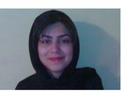

|
|

مگر این قوانین تبعیض آمیز هستند!!؟ این ها حمایتند!/ مهسا شوراب
دو شنبه12 آذر 1386
مدتی است هر روزکوچه به کوچه برای جمع آوری امضا می روم و درد دل می شنوم. حرف هایی که صدای خاموش دخترانی است که از اینکه جنس دوم تلقی می شوند و در جامعه به حساب نمی آیند در عذابند ، حرف های مادرانی که حتی حق ولایت و سرپرستی فرزندان خود را ندارند، حرف های زنانی که از کار کردن و داشتن شغل مورد علاقه ی خود محروم می شوند. آری فریاد آنها را می شنوم ؛ فریادی که بی صداست، فریادی که در آن هزاران راز نهفته است و این فریاد ها هر روزه مصمم ترم مي كند و هر روز برای گرفتن امضای بیشتر به پارک ها و بوستان های مختلف می روم . در این بین صدای مردمانی را می شنوم که با تعجب از من می پرسند: "مگر این قوانین تبعیض آمیزند!؟ اینها حمایت مردان از زنان است" ودلایل این قوانین را اینگونه برایم شرح می دهند :
"مردی که به زنش نفقه می دهد می خواهد زنش راحت زندگی کند ، مردی که نمی خواهد زنش کار کند نمی خواهد زنش سختی بکشد، اجازه ی ازدواج دختر به این دلیل حق پدر است كه پدر بهترین گزینه را برای دخترش انتخاب می کند!!! "
در برابر می گویم : "این چه نوع حمایتی است که برای زن برابر زور است، این چه لطفی است که باعث آزار روح زنان می شود و آنها را به نابودی و ضعف می کشاند و به واسطه آن هر روز مجبور به تحمل خشونت پنهان و آشکار مي شوند. آیا زنان هم حق این نوع حمایت را از مردان خود دارند؟ مي توانند برای آنکه مردانش سختی نکشند مانع کار کردن و درس خواندش شوند؟ آیا مادران می توانند برای خوشبختی پسرانشان تعیین تکلیف کنند و اجازه ازدواج پسر را در انحصار خود بگیرند؟
سکوت فضا را پر می کند و چشم ها به برگه ی کمپین خیره می شود. در این میان عده ایی با یک امضا مخالفت خود را با این قوانین تبعیض آمیز اعلام می کنند و گروهی دیگر...
من از آنانی که امضا نمی کنند خرده نمی گیرم زیرا از کودکی شنیده اند: "یک «زن» ضعیف است و نمی تواند از خود دفاع کند. یک «زن» احساساتی است به این دلیل زودتر گول می خورد بنابراین شهادتش قبول نیست. دیده اند که مادرنشان بدون چون و چرا و يا با زور و کتک حرف پدرانشان را پذيرفته اند. همیشه دیده اند که یک «زن» نصف مرد است و دیدند خاله هایشان نصف دایی هایشان ارث برده اند گرچه همه، فرزندان یک پدر مادر بوده اند و هر روز شاهد ازدواج هایی بوده اند كه به اجبار پدر صورت گرفته است. این قوانین نابرابر را سال هاست تجربه کرده اند و گمان می برند قانون این است و جز آن چیزی نیست.
ولی من یقیین دارم که همان افراد روزی در خلوت خود از خود می پرسند آیا واقعا زنان نمی توانند ؟ آیا واقعا دختر همسایه ی ما که 18 سال از عمرش را درس خوانده نصف برادرش است که 18 سال از عمرش را سر کوچه ایستاده است؟؟؟ آیا مردان بدین گونه می خواهند از زنان حمایت کنند ؟
آنگاه ناخودآگاه به یاد کمپین یک ملیون امضا می افتند و روزی در همان بوستان به من می گویند: "ما با دوستان خود مدتی است هر روز به این پارک می آيیم تا شما رو ببینیم و بیانیه را امضا کنیم و ..."
به لب هایم مزن قفل خموشی
که در دل قصه ای ناگفته دارم
زپایم باز کن بند گران را
کزین سودا دل آشفته دارم....
فروغ